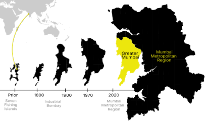
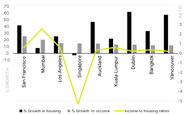
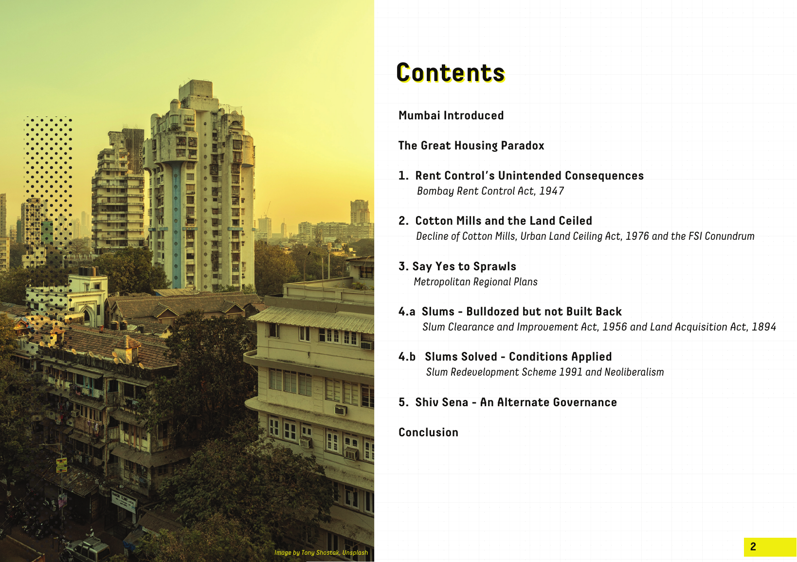
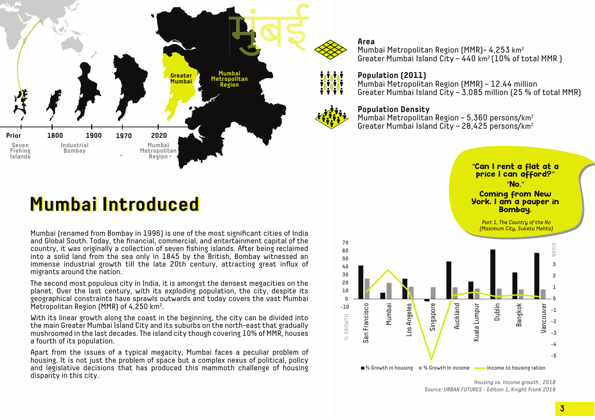
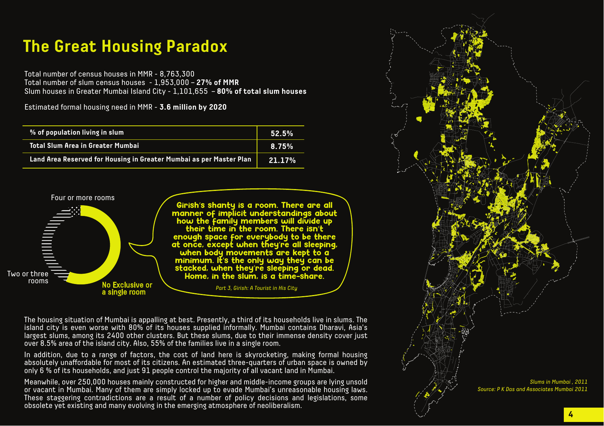

This blog is my analysis of housing, particularly slum organisation and management in Mumbai. My insights are drawn from state and local policies stretching from last century until 2021. I used excerpts from Suketu Mehta’s Maximum City to weave real life stories and perceptions through a macrostructure of policies and governance decisions.

Mumbai (renamed from Bombay in 1996) is one of the most significant cities of India and the Global South. Today, the financial, commercial, and entertainment capital of the country, it was originally a collection of seven fishing islands. After being reclaimed into a solid land from the sea only in 1845 by the British, Bombay witnessed an immense industrial growth till the late 20th century, attracting great influx of migrants around the nation.
The second most populous city in India, it is amongst the densest megacities on the planet. Over the last century, with its exploding population, the city, despite its geographical constraints have sprawls outwards and today covers the vast Mumbai Metropolitan Region (MMR) of 4,250 km².
With its linear growth along the coast in the beginning, the city can be divided into the main Greater Mumbai Island City and its suburbs on the north-east that gradually mushroomed in the last decades. The island city though covering 10% of MMR, houses a fourth of its population.
Apart from the issues of a typical megacity, Mumbai faces a peculiar problem of housing. It is not just the problem of space but a complex nexus of political, policy and legislative decisions that has produced this mammoth challenge of housing disparity in this city.
Mumbai Metropolitan Region (MMR) — 4,253 km²
Greater Mumbai Island City — 440 km² (10% of total MMR)
Mumbai Metropolitan Region (MMR) — 12.44 million
Greater Mumbai Island City — 3.085 million (25% of total MMR)
Mumbai Metropolitan Region — 5,360 persons/km²
Greater Mumbai Island City — 28,425 persons/km²

The great housing paradox
The housing situation of Mumbai is appalling at best. Presently, a third of its households live in slums. The island city is even worse — 80% of its houses are supplied informally.
Mumbai contains Dharavi, Asia’s largest slum, among its 2,400 other clusters. But these slums, due to their immense density, cover just over 8.5% of the island city’s area. Also, 55% of families live in a single room.
Due to a range of factors, the cost of land here is skyrocketing, making formal housing absolutely unaffordable for most citizens. An estimated three-quarters of all urban space is owned by only 6% of households, and just 91 people control the majority of all vacant land in Mumbai.
Meanwhile, over 250,000 houses — mainly built for higher and middle-income groups — lie unsold or vacant. Many are simply locked up to evade Mumbai’s unreasonable housing laws. These staggering contradictions are a result of policy decisions and legislations: some obsolete yet existing, many evolving in the emerging atmosphere of neoliberalism.

Girish’s shanty is a room. There are all manner of implicit understandings about how the family will divide up their time in it. There isn’t enough space for everybody to be there at once, except when sleeping, when body movements are kept to a minimum.
Home, in the slum, is a time-share.
Part 3 · Girish: A Tourist in His City“See, we are seven people. Me and my older brother on the cot… then my two younger brothers on the floor… my parents in the kitchen, only notionally separated from the front half of the room… ‘My sister under the table.’”
Girish sketches two circles on a rectangle. Two more balloons below it. Then he draws a line, writes TABLE on it. He folds the napkin, folds it again, scrunches it into a ball, presses it very hard in his fingers, presses it with all his might — and when it has become small, so small that it is insignificant, he throws it away. Then he looks up and smiles at me.
Part 3 · Girish: A Tourist in His City
Mumbai’s social and physical fabric today is a result of complex layers of macro and micro policies, legislations and politics that have continued to weave and entangle for over seven decades since India’s independence in 1947.
Five such major layers of its political economy are identified and discussed next.
“The housing market in the city best represents the political economy of Mumbai, with its base in creating wealth by any means, resulting in vast structural inequalities in the system” — Sharma, 2007

1930 → 2020
Scroll to move through the chronology. Each stop lights up the years it belongs to — legislation, policy and politics that built today’s paradox.
Babanji · runaway poet
“I like it very much. I have no problems. I don’t want a home; I am more free on the footpath. The footpath is the friend of the poor. How many people it accommodates to sleep on!”How does he like the footpath life?
— Babanji, poet, homeless immigrant, 17 years old · Part 3, Babbanji: Runaway Poet · Image by BIND Collective, NEXT CITY 2016
Further reading
Le contenu détaillé de cet article sera bientôt disponible en français. En attendant, veuillez consulter la version anglaise.